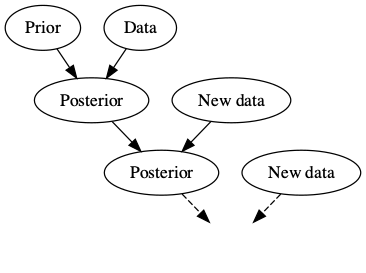

ISI-BUDS 2026
Statistical methods are mainly inspired by real-life scientific problems.
The overall goal of statistical analysis is to provide a robust framework to understand unknown phenomena, answer scientific questions, and make decisions.
To this end, we rely on the observed data as well as our domain knowledge.
Bayesian statistics provides a principled framework for incorporating our domain knowledge in the data analysis.
Our domain knowledge, which we refer to as information, is mainly based on previous empirical evidence.
For example, if we are interested in the average normal body temperature, we would of course measure body temperature of a sample of subjects from the population, but we also know, based on previous data, that this average is a number close to \(98.6\,^{\circ}\mathrm{F}\).
In this case, our prior knowledge asserts that values around 98 are more plausible compared to values around 90 or 110.

We could of course attempt to minimize our reliance on prior information.
Most frequentist methods adhere to this principle, leveraging domain knowledge to determine which population characteristics are relevant to the scientific problem at hand (e.g., excluding height as a risk factor for cancer). However, they typically avoid incorporating priors when making inferences.
It is important to recognize that this does not imply frequentist methods are entirely objective.
Bayesian methods on the other hand provide a mathematical framework to incorporate prior (domain) knowledge in the process of making inference.
This is based on the philosophy that if the prior is in fact informative, this should lead to more accurate inference and better decisions. Also, the way we incorporate our prior knowledge in the analysis should be explicit.
While the underlying concept for Bayesian statistics is quite simple, implementing Bayesian methods might be more difficult compared to their frequentist counterparts.
Therefore, while Bayesian methods provide a coherent and robust framework for statistical inference, they require a careful specification of models and priors.
Additionally, you need strong computational skills to implement them.
In the Bayesian paradigm, probability is a measure of uncertainty.
``Coins don’t have probabilities, people have probabilities’’, Persi Diaconis.
``The only relevant thing is uncertainty–the extent of our own knowledge and ignorance,’’ Bruno deFinetti.
In this view, all that matters is uncertainty, and all uncertainties are expressed in terms of probability:
random variables that change, or
parameters that might be assumed fixed (e.g., the population mean) but we are uncertain about their value.
Consider the well-known coin tossing example. What is the probability of heads in one toss?
There are only two possibilities for the outcome: heads and tails. Assuming symmetry (i.e., a fair coin), heads and tails equal probability 1/2.
In the frequentist view, probability is assigned to an event by regarding it as a class of individual events (i.e., trials) all equally probable and stochastically independent:
Note that while Bayesians and frequentists provide the same answer, there is a fundamental and philosophical difference in how they view probability.
Bayesians feel comfortable to assign probabilities to events that are not repeatable.
For example, I can show you a picture of a car and ask ``what is the probability that the price of this car is less than $5,000?’’.
Gelman and Nolan (2002) proposed the following experiment.
I am going to keep tossing a coin and you are going to guess the outcome, you would win $1 every time you guess “heads” and the outcome is “heads”. What would be your strategy?
Would you change your strategy if I tell you the coin is not a fair coin and the probability of heads is only 0.1?
It is clear that to make decisions, we need more than just probability: we need a measure of loss or gain for each possible outcome.
For this, we usually use a that assigns to each possible outcome a number that represents the cost and the amount of regret (e.g., loss of profit) we endure when that outcome occurs.
Decision theory plays a key role in Bayesian statistical inference.